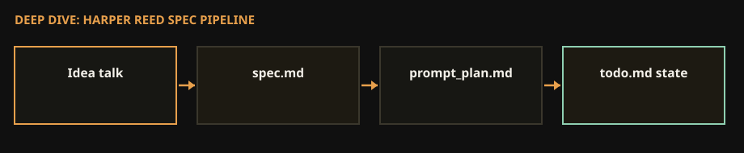

Deep Dive: Harper Reed Spec Pipeline
The full build system from one blog post: talk an idea into a spec, turn the spec into a prompt plan, run the plan one prompt at a time, and keep state in a todo file. Source: Harper Reed, My LLM Codegen Workflow, 16 February 2025, read in full. Confidence: High.

The system in one view
Three files carry the whole method. spec.md holds what to build. prompt_plan.md holds one self contained prompt per build step. todo.md holds state across sessions, and the codegen tool checks items off as it works. Planning takes near 15 minutes. Build time goes to execution, not to re-explaining.
Phase 1: idea honing
Tool: a strong chat model. Method: the model asks one question at a time. You answer in short form. The talk ends when the idea holds no open branch: user, scope, data, edge cases, and what done means.
Opening prompt pattern (from the post, structure verbatim): Ask me one question at a time about <IDEA> until the idea is fully specified. Then compile the answers into a developer-ready spec and save it as spec.md.
Why one question at a time works: a batch of ten questions gets skim answers. One question forces a decision per turn. The spec at the end is a compile step, not a summary: the model restates every decision in build terms.
Phase 2: the prompt plan
Tool: a reasoning model. Input: spec.md. Output rules from the post: markdown file, each step is one self contained prompt in a code block, steps broken down twice to reach the right size, and no step may leave orphaned code that nothing integrates. Then one more prompt creates todo.md as a full checklist.
Plan prompt pattern (structure from the post): Read <SPEC>. Produce prompt_plan.md. Each step is a single prompt in a code block. Each prompt must stand alone: it names the files, the behavior, and the test for that step. Break each step down twice. No step may leave code that no later step integrates. Then: Can you make a todo.md that I can use as a checklist? Be thorough.
Phase 3: execution, two modes
- Pair mode: paste one prompt from prompt_plan.md into the coding chat. You own boilerplate and tooling choices. Review the diff. Check the todo item.
- Agent mode: paste the prompt into an agent runner. The agent runs tests and debugs inside the step. You review at step end.
- Stuck protocol: pack the whole repo with repomix and hand the pack to a fresh chat with the failing step and the error text. Fresh context plus full code beats a long stuck thread.
Brownfield mode: the mise task system
For work on an existing repo, Reed plans per task, not per project. A global mise config holds seven tasks. Each task packs the repo with repomix into output.txt, then pipes the pack through the llm CLI with a named prompt template.
The seven task names, verbatim from the post: LLM:clean_bundles LLM:copy_buffer_bundle LLM:generate_code_review LLM:generate_github_issues LLM:generate_issue_prompts LLM:generate_missing_tests LLM:generate_readme Pipeline pattern under the tasks: cat output.txt | llm -t code-review-gen -m claude-3.5-sonnet > code-review.md cat output.txt | llm -t readme-gen > README.md Local override rule: a repo .mise.toml may replace a task, but the task must still produce output.txt.
The loop in use: run generate_missing_tests, read missing-tests.md, copy the bundle, paste the bundle plus the first issue into the coding tool, run tests, repeat. Each pass is small, state lives in files, and any session can resume from todo.md alone.
Prompt magic: the persona frame
His three workhorse prompts (code review, issue generation, missing tests) share one frame: a senior developer persona, the packed repo as input, and an explicit do not hallucinate rule. The frame matters less than the input discipline: the model sees the whole repo, not a fragment, so its review names real files.
Apply this to your work
Your study builds and paper builds fit this pipeline with no change. Idea talk becomes a scope talk: one question at a time on sources, depth, and output form. spec.md becomes the build brief you already demand in one pass. prompt_plan.md becomes one prompt per chapter or per paper section, each with its own acceptance check. todo.md becomes the atomic coverage list. Your current pain, restating scope mid build, is the exact failure this system removes: the spec file holds scope, so no session re-litigates it.
Replication checklist
- Write the idea talk prompt into your chat tool today.
- Run one idea through all three phases on a small tool you want.
- Save spec.md, prompt_plan.md and todo.md in the repo root.
- Add one mise style task or one shell script per repeat job: review, tests, readme.
- Rule: if a step leaves orphan code, the plan is wrong. Fix the plan, not the code.
Prompt file: prompts/spec-pipeline.md in the repo root of this branch.
Missing from the source: the literal body of each mise task. The post gives names and the pipeline pattern only. The prompt file in this repo rebuilds each task body from that pattern and marks the rebuild as a template.
Visual map of this page
Two views of one page: a Mermaid flow for work order, rendered by the local Mermaid library in this folder, and a markmap for concept groups.
Mermaid source, for offline read
flowchart LR A[Idea] --> B[One question at a time] B --> C[spec.md] C --> D[prompt_plan.md] D --> E[One prompt per step] E --> F[todo.md check] F -->|stuck| G[repomix pack to fresh chat] G --> E
How to read the flow diagram. Step 1: start at the first box. Step 2: follow each arrow to the next stage. Step 3: at a branch box, read both paths before a choice. Step 4: a loop arrow means work returns for one more pass vs a test.
Markmap: concepts on this page
- Deep Dive: Harper Reed Spec Pipeline
- Files
- spec.md
- prompt_plan.md
- todo.md
- output.txt pack
- Modes
- Pair mode
- Agent mode
- Brownfield mise tasks
- Rules
- No orphan code
- One prompt at a time
- Files